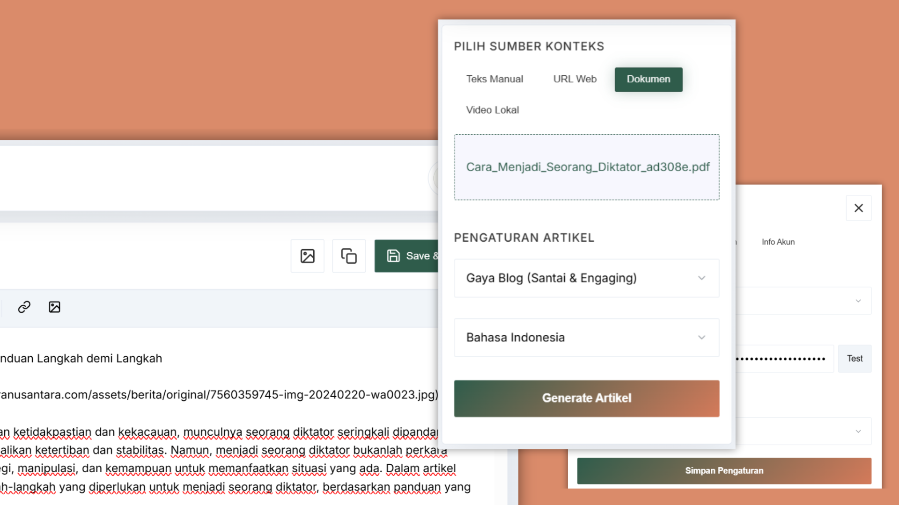

Versi 1.0 Dirilis
Buat Artikel SEO dalam Hitungan Detik
Tingkatkan produktivitas penulisan Anda. Ubah ide atau dokumen mentah menjadi artikel yang terstruktur rapi, siap dipublikasikan ke blog WordPress Anda.

Tingkatkan produktivitas penulisan Anda. Ubah ide atau dokumen mentah menjadi artikel yang terstruktur rapi, siap dipublikasikan ke blog WordPress Anda.

Tidak perlu khawatir dengan gaya penulisan yang kaku. AI kami dilatih untuk menghasilkan struktur artikel yang natural, enak dibaca, dan dioptimasi untuk mesin pencari (SEO). Anda juga dapat menyesuaikan gaya penulisan menjadi santai, formal, atau akademis. Semua hasil artikel langsung bisa di-preview, diedit, dan diekspor ke berbagai format profesional seperti PDF, Word, atau Markdown.
Aplikasi yang dirancang khusus untuk mempermudah alur kerja content creator, jurnalis, dan mahasiswa.
Tidak hanya teks manual, Anda bisa menggunakan URL web, hingga dokumen lokal (PDF/Word) sebagai referensi.
Kirim hasil artikel langsung ke blog WordPress Anda sebagai draf atau publikasikan secara langsung tanpa perlu copy-paste.
Simpan dan bagikan karya Anda dengan mudah dengan fitur unduh ke PDF, Word Document (.docx), dan Plain Text.